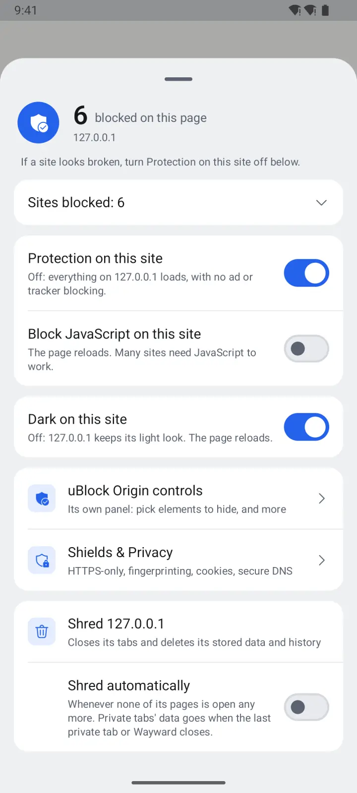
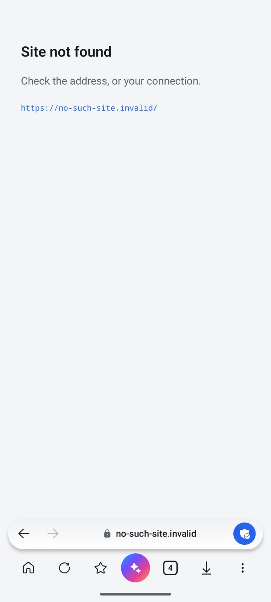

Fix a site that looks broken or won't work
How-to
If a page is blank, a button or video doesn't work, or sign-in fails, start here. Wayward blocks a lot, and once in a while a site needs something it blocked. Try these in order; most sites work after the first two.
1. Reload
Pull the page down from the top and let go, or tap Reload. A page that half loaded often just needs another go.
2. Turn off protection for that site
- On the broken site, tap the blue shield in the address bar.
- Turn off Protection on this site. Everything on the site then loads, with no ad or tracker blocking there. Other sites stay protected.
- Reload the page if it doesn't change by itself.

If that fixes it, you can leave it off for that site. Turn it back on the same way. More on the shield in See what was blocked, and let a broken site through.
In a private tab the shield has no per-site switch. Tap uBlock Origin controls there and turn uBlock Origin off for the site in its own panel, or open the site in a regular tab.
3. Check JavaScript
Many sites need JavaScript to work at all. If you turned on Block JavaScript on this site (in the same shield sheet), or Block JavaScript on every site (in Settings > Shields & Privacy), turn it off for this site.
4. Try a lighter level of blocking
If Ad blocking in Settings > Shields & Privacy is on Strict or Maximum, try Standard: it breaks the fewest sites. In the same screen, Strict fingerprinting protection (under Advanced) also breaks some sites; turn it off if you turned it on.
5. Other things that can get in the way
- The page looks wrong in the dark: turn off Dark on this site in the shield sheet. See Keep one site light.
- The site's phone version is missing something: tap Desktop in the menu's top row to get the version a computer gets.
- Signing in keeps failing: if Cookies in Settings > Shields & Privacy is on Block all third-party, sites that sign you in through another site can fail; try Isolate cross-site.
- You're signed out, or the site has forgotten you: private tabs, and spaces with their own sign-ins, keep their own cookies, so you sign in there separately.
- A "check you're human" box keeps coming back: turn off Protection on this site for it. Wayward doesn't solve these checks for you.
- The page itself won't open, and Wayward shows a message in its place instead: see What Wayward's messages mean.

6. Start the site fresh
If the site is stuck in a bad state, clear what it stored: in the shield sheet, tap Shred example.com (with your site's name), then Shred. It closes the site's tabs and deletes its cookies, sign-ins, site data, cache, permissions, history and start page shortcuts, so you'll need to sign in again. Bookmarks are kept.
Still broken?
Tell us: Settings > Send feedback, with Something isn't working and Browsing, and say what you tried. Web addresses are taken out of the report automatically, even a plain site name like example.com, so if we need to know the site, add it in the email itself before you send. See Send feedback or report a problem.